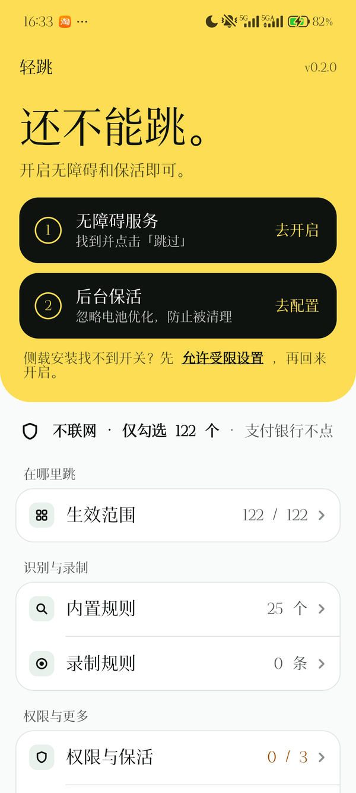
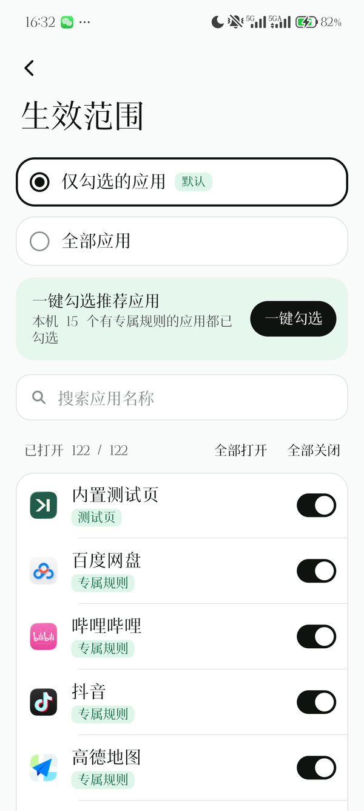
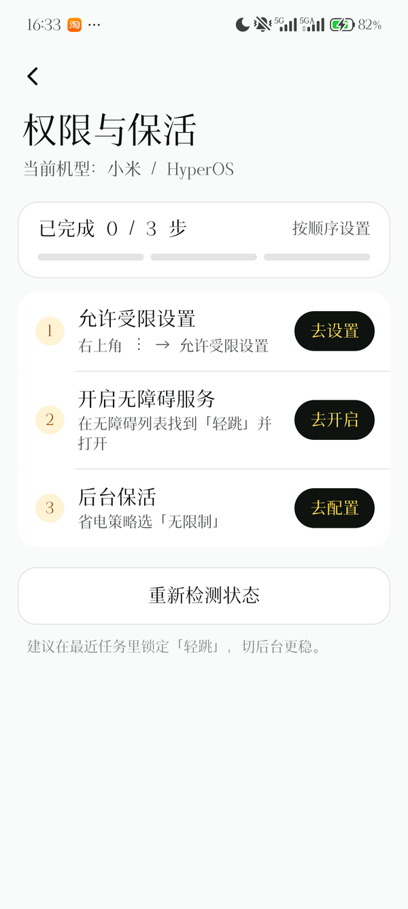

一眼看清当前状态
顶部状态卡直给「开启无障碍」与「后台保活」两步入口，下方单行信任条明确展示隐私边界与当前生效数量。
面向日常安卓自用的轻量开屏广告跳过应用。无第三方 SDK、无联网权限、默认仅在勾选应用中生效，并自动避开支付与银行界面。

顶部状态卡直给「开启无障碍」与「后台保活」两步入口，下方单行信任条明确展示隐私边界与当前生效数量。

默认采用「仅勾选的应用」克制模式，支持搜索与「一键勾选推荐应用」，带专属规则的应用清晰标记。

自动识别小米 HyperOS 等系统，按「受限设置 → 无障碍服务 → 后台保活」三步顺序指引并实时校验完成度。
Manifest 中完全不含 INTERNET，且设置 allowBackup="false"。所有规则识别均在设备本地实时完成。
内置 25 套常见应用专属规则，支持在本地按需录制自定义跳过节点，并硬编码避开支付与银行类页面。
纯 Java 与原生 Android SDK 编写（minSdk 26 / targetSdk 35），无臃肿框架，源码清晰可审计。
全应用仅声明两项必要权限与一项无障碍服务，无网络、无定位、无存储读取。
<uses-permission android:name="android.permission.QUERY_ALL_PACKAGES"/> <uses-permission android:name="android.permission.REQUEST_IGNORE_BATTERY_OPTIMIZATIONS"/> <!-- 无 INTERNET 权限 · allowBackup="false" -->
拉取仓库后使用 JDK 17 与 Android SDK 35 直接运行单元测试并构建调试包：
./gradlew testDebugUnitTest ./gradlew assembleDebug adb install -r app/build/outputs/apk/debug/app-debug.apk